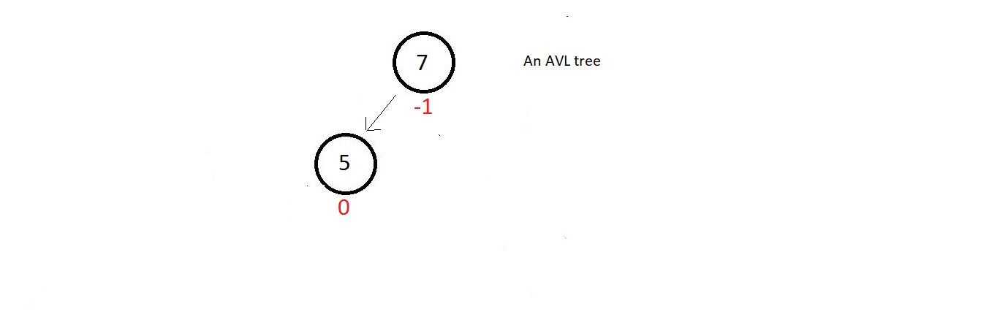
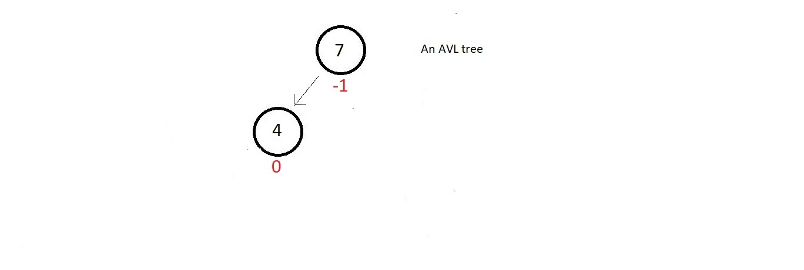

Rotation and Insertion in AVL Tree
Quick brief revision of the characteristics of AVL trees.
- AVL trees are height-balanced binary search trees.
- It gives an upper bound of O(logn) to all the operations possible in a Binary search tree
- Balance factor, BF = Height of Right Subtree - Height of Left Subtree, and for a binary search tree to be an AVL tree, |BF| should be less than or equal to 1 for all of its nodes.
An example for an AVL tree is:
Why rotation is done in AVL tree
- In an AVL tree, rotations are performed to avoid the unbalancing of a node caused by insertion.
Now,
suppose we have a small AVL tree having just these two node.
 - The balance factor of both the nodes are good, but as soon as we insert a new node having data
4,
our updated tree becomes unbalanced to the left. The absolute balance factor of node 7 becomes
greater than 1.
- So, the method you will follow to make this tree an AVL again is called rotation.
Now rotation can be of different types, one of them being the LL rotation
LL Rotation
- The name LL, just because we inserted the new element to the left subtree of the root.
- In this rotation technique, you just simply rotate your tree one time in the clockwise
direction as shown below
- So, our tree got balanced again, with a perfect balanced factor at each of its node. Next, we have the RR rotation
RR Rotation
- Now, supporse we have a small AVL tree having just these two nodes.
- The balance factor of both the nodes are good, but as soon as we insert a new node having data 11, our updated tree becomes unbalanced to the right.
- The absolute balance factor of node 7 becomes greater than 1.
- So, the method you will follow now to make this tree an AVL again is called the RR rotation.
- The name RR, just because we inserted the new element to the right subtree of the root.
- In this rotation technique, you just simply rotate your tree one time in anti-clockwise direction as shown below
- So, our tree got balanced again, with a perfect balanced factor at each of its nodes.
LR Rotation
- Now, supporse we have a small AVL tree having, just these two nodes
 - The balance factor of both the nodes are good, but as soon as we insert a new node having data 5, our updated tree becomes unbalanced to the left.
- The absolute balanced factor of node 7 becomes greater than 1.

- So, the method used to make this again a AVL tree will be LR rotation
- The name LR, just because we inserted the new element to the right to the left subtree of the root.
- In this rotation technique, there is a subtree complexity, which says, first rotate the left subtree in the anticlockwise direction, and then the whole tree in the clockwise direction.
- Follow the two steps illustrated below
Step 1:
Step 2: - So, our tree got balanced again, with a perfect balance factor at each of its node.
RL Rotation
- Now, supporse we have a small AVL tree having just these two nodes.
- The balamced factor of both the nodes are good, but as soon we insert a new node having data 10, our updated tree becomes unbalanced to the right.
- The absolute balance factor of node 7 becomes greater than 1.
- Method used is RL rotation.
- The name RL, just because we inserted the new element to the left to the right subtree of the root.
- We follow the same technique we used above, which says, first rotate the right subtree in the clockwise the direction, and then the whole tree in the anticlockwise direction.
- Follow the two illustrated below
step 1:
step 2: - So, our tree got balanced again, with a perfect balanced factor at each of its nodes.